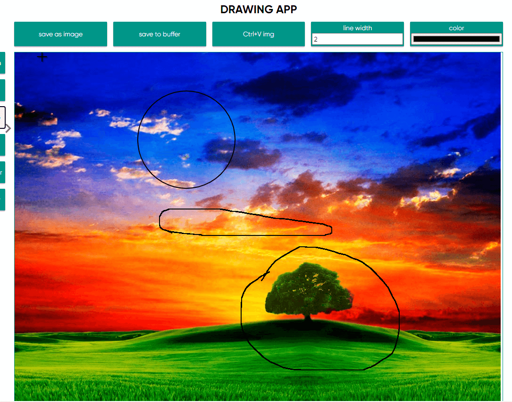
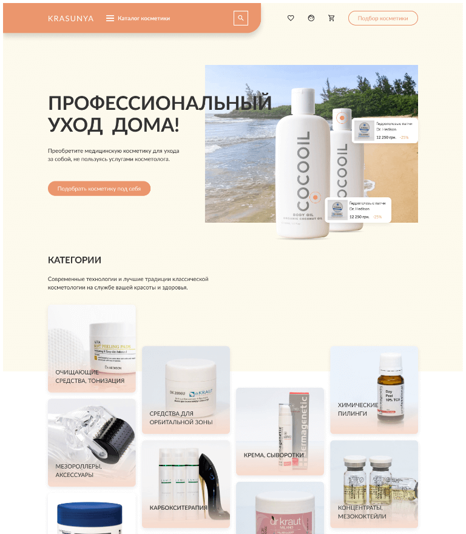
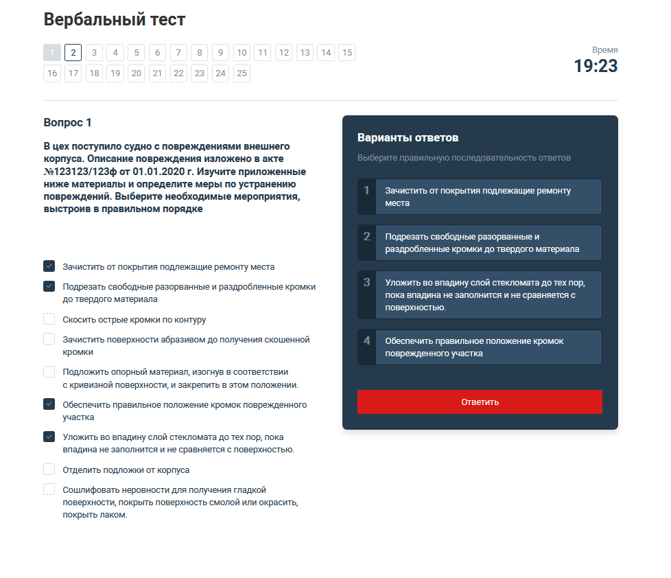
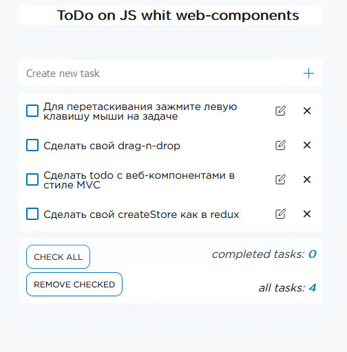
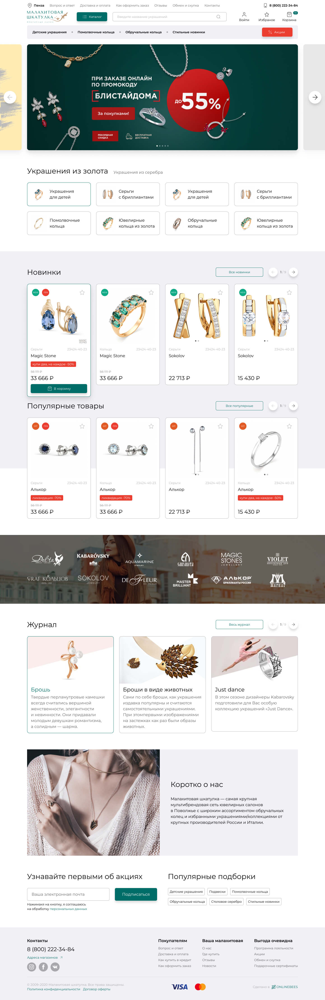

- TypeScript app
Typescript приложение для рисования
Это учебный проект для практики ООП, в частности паттернов "стратегия", "снимок" и "команда". Реализованы следующие функции: вставить изображение из буфера обмена, скопировать изображение в буфер обмена(с помощью clipboard API), отмена операций (через паттерн снимок и команда), несколько инструментов для рисования, ластик (паттерн "стратегия" и "команда").
 - SPA на реакте
Интернет магазин Krasunya
В этом проекте 3 страницы -главная, каталог, страница товара. В качестве данных использовал сайт punkapi.com. В приложении не используются другие библиотеки кроме реакт и реакт-роутер. На главной странице блок статей сделан с самодельным слайдером и js-анимацией(функцию animate взял из книги Кантора и немного адаптировал под себя переделав под промис). В шапке страницы реализовал умный поиск с тротлингом (используйте английские названия пива!, сервер предоставляет api для поиска пива Brewdog, поэтому искать следует например так, Black, или Ipa, или Russian).
 - web-components
Многостраничной сайт для тестирования
Проект написан с web-components, реализован собственный drag&drop. Подробное описание проекта в ReadMe.md на github по ссылке ниже
 - web-components
Todo с web-components
Простое to-do приложение на JS с использованием веб-компонентов. В приложении реализовал возможность перетаскивания задач в нужном порядке с сохранением состояния в localStorage. Сделал свой вариант CreateStore по типу одноименной функции из redux. Приложение сделано в стиле MVC без использования сторонних библиотек
 - adaptive site
Адаптивная резиновая верстка
Интернет магазин с самописным слайдером и js-анимацией
